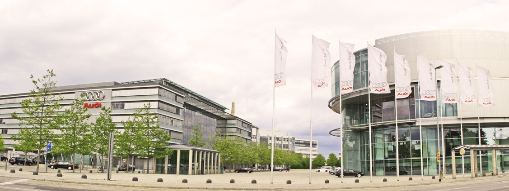

Bienvenue sur le portail d'information du Groupe Audi
Le Groupe Audi
Audi AG est un constructeur d'automobiles, sportives et de luxe allemand, filiale du groupe Volkswagen
appelé VAG (Volkswagen Aktiengesellschaft) qui détient la marque à 99,55 %. Le siège social se situe à Ingolstadt
en Bavière. Implanté dans 55 pays du monde, Audi est présent sur la plupart des segments du marché des véhicules
particuliers, y compris sur celui des sportives de prestiges grâce à ses deux filiales que sont Lamborghini et
quattro GmbH.

Siège social Audi à Ingolstadt
Lancement du premier véhicule 100% électrique
Après avoir lancé en 2013 son premier modèle de voiture hybride, c’est face à la grande concurrence de BMW (son principal concurrent) et de Mercedes
que la marque allemande aux quatre anneaux décide de présenter en 2018 son premier SUV 100% électrique qu’elle a nommé Audi e-tron.
Présentée officiellement le 17 septembre prochain à San Francisco aux États-Unis (siège de Tesla),
cette première voiture électrique signée Audi entamera ses premières livraisons à compter de fin 2018.
Un modèle zéro émission donc, qui prend l'apparence d'un petit SUV bourré d'options, si bien que le modèle de base sera commercialisé à partir de 74 800 dollars.Un tarif qui ne semble pas effrayer les amateurs d'électromobilité, puisque
le constructeur (par le biais de son directeur France Lahouari Bennaoum) fait savoir aujourd'hui que son Audi e-tron a enregistré déjà plus de 10 000 précommandes depuis le lancement du système de réservations. Des précommandes qui s'accompagnent, rappelons-le, d'un acompte de 2000 euros, et qui concernent aussi bien les particuliers que les entreprises.
Au passage, Audi se charge de rappeler que l'Audi e-tron aura également droit à un modèle de lancement
en série limitée. Il s'agit de l' Audi e-tron Edition One, produite à
seulement 2600 exemplaires dans le monde, dont une centaine réservée au marché français.